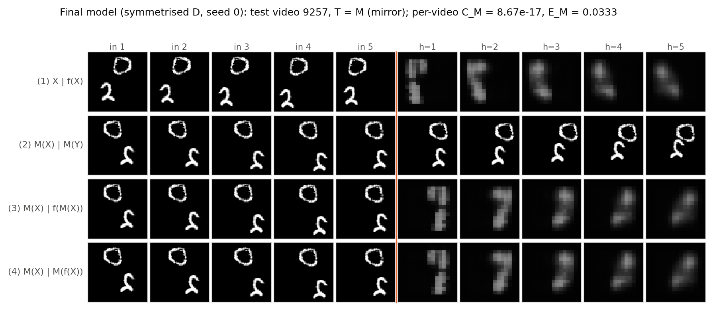
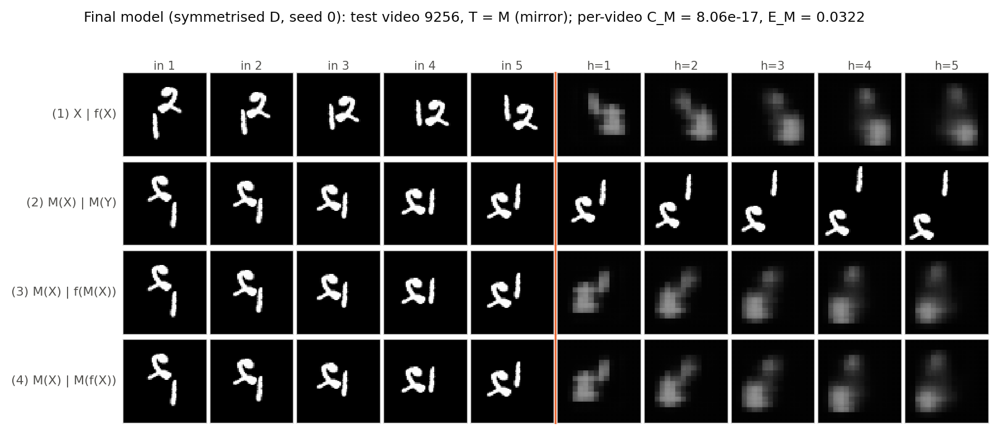
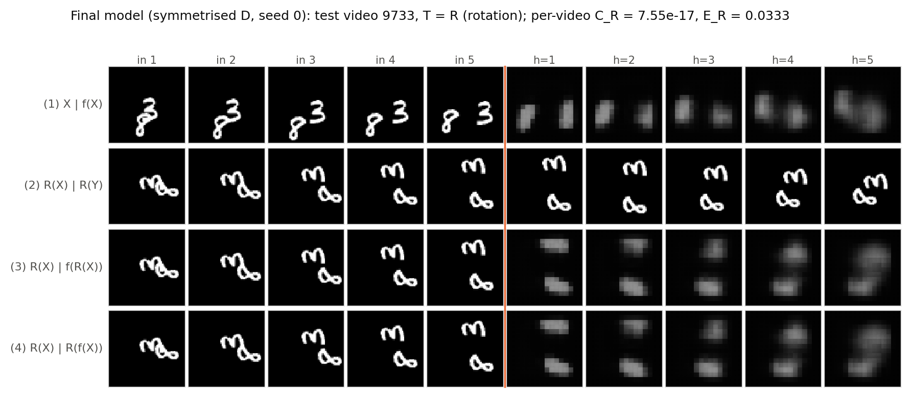
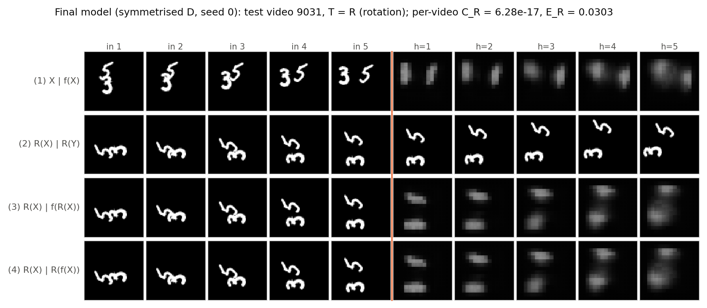
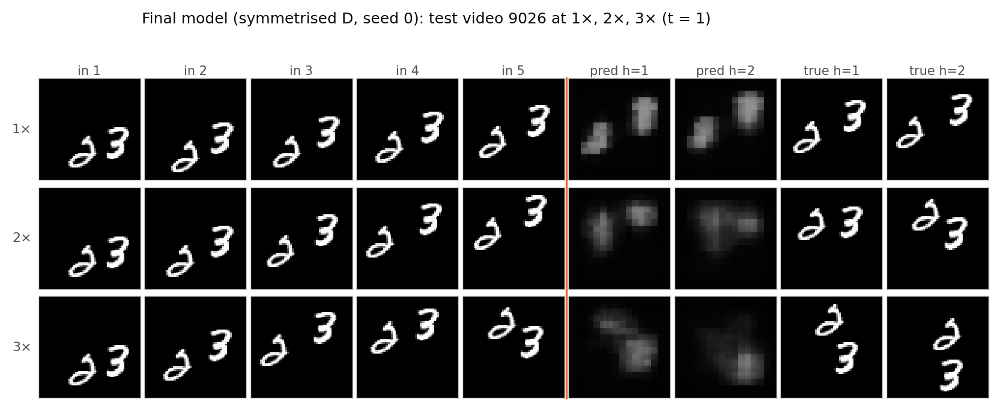

Symmetrised forecaster (mm/models.py: Symmetrised). The eight transformed copies g(X), g ∈ G, are stacked into one batch of 8B videos. The trained model runs once on that batch, each output is mapped back with g−1, and the eight results are averaged (Eq. 7). Every transformation acts frame by frame on all five frames, so the 9-step rollout and the feedback of predictions happen inside each transformed copy.
Let T ∈ G (in particular T = M or R). Then
The substitution h = gT is valid because G is a group: right-multiplying by T just permutes its eight elements, so the sum runs over the same set. (hT−1)−1 = T h−1, and T can be taken out of the average because a pixel permutation is linear. Hence f̄(TX) = T(f̄(X)) for every input, so CT = 0. Nothing about f was used, so this holds for any forecaster, trained or not. In floating point the two sides sum the same eight terms in a different order, and they go through the GPU in different batch positions, so the measured values are at rounding-error level (Table 6), not exactly zero.
Choice of final model: symmetrised D, the default the handout specifies. The optional D+B model was not trained. Table 5 does not give a strong reason to expect D+B to beat symmetrised D. Symmetry augmentation on its own (A → B) changed accuracy by only a few per cent and reduced but did not remove the inconsistency. The wrapper removes the inconsistency exactly (Table 6) without any loss in accuracy, so stacking the two would at most sharpen the averaged predictions a little. Symmetrised D is the only model that combines exact mirror/rotation consistency with good accuracy at 2× and 3×.
Table 6. Symmetrised models (Eq. 7), using the Table 5 columns. Training time is that of the underlying learned model (symmetrisation needs no training). Inference time covers all eight transformations, the forward passes, the inverse transformations and the averaging, for all 1,000 original test videos. CM and CR are at floating-point rounding level.
{{T6}}




| Learned (model B) | Built in (symmetrised B / D) | |
|---|---|---|
| Consistency | CM = 0.0012, CR = 0.0014: about half of A's CR, but clearly non-zero | CM, CR ≈ 5–8×10−17: zero up to rounding |
| Accuracy, original clips (E(5) 1×) | 0.0230 | symmetrised B 0.0224 (slightly better than B); symmetrised D 0.0273 (= D's 0.0274) |
| Accuracy, transformed clips | EM 0.0230, ER 0.0229 | EM = ER = E(5) exactly (0.0224 / 0.0273) |
| Inference, 1,000 videos | 0.93 s | 15.7 s / 16.4 s (≈ 16–17× slower than B / D) |
The built-in symmetry is exact; the learned one is not. Augmentation only adds a penalty for inconsistency on the training samples it happens to draw. A network with finite capacity and 30 epochs of training approximates the symmetry, imperfectly and only near the training data. The symmetrised forecaster is equivariant by construction: the group-averaging argument above holds for any weights. The cost is inference. Eight forward passes on an 8× larger batch, plus the transformations, make it about 16–17× slower here (a little worse than 8× because of the transformation copies and the larger batches).
When averaging would hurt. Averaging eight predictions blurs whenever they disagree: if the base model is strongly tied to appearance and makes bad predictions on transformed inputs, the average mixes a sharp, correct prediction with seven misplaced ones, producing ghosts and blur. It would also hurt if the true dynamics were not symmetric (for example gravity, a preferred drift direction, or scenes where orientation carries meaning), since the average would then impose a symmetry the data do not have. Here it did not hurt in MSE. All three base models are already nearly equivariant (ER within 7.5% of E(5) even for A), so the eight predictions agree closely and averaging mainly removes noise. E(5) improves slightly for B (0.0230 → 0.0224) and is unchanged for D. A supplementary check on symmetrised A (not in the tables) gives 0.0222 against 0.0223 for A. Visually, though, the averaged frames are dimmer and softer (Figure 6: peak intensity about 0.45–0.57 against 0.6–0.8). MSE rewards this hedging, while a sharpness-sensitive metric would penalise it.
Centroids at h = 1, 3, 5 on the rotated clip. The truth is: "∞" rows 46.6, 46.6, 40.6; "m" rows 12.7, 20.7, 26.9.
| Model (seed 0) | per-video CR | per-video ER | "∞" row at h=5 (true 40.6) | "m" row at h=5 (true 26.9) |
|---|---|---|---|---|
| A, row 3 f(RX) | 6.74×10−3 | 0.0366 | 47.6 (no bounce) | 22.2 (stalls, fades to 0.48) |
| B (symmetry augmentation) | 1.88×10−3 | 0.0335 | 46.4 | 23.6 |
| C (speed augmentation) | 5.62×10−3 | 0.0386 | 45.0 | 20.1 |
| D (speed + reach) | 4.65×10−3 | 0.0371 | 44.6 | 20.4 |
| Final: symmetrised D | 7.55×10−17 | 0.0333 | 44.6 (rows 3 = 4) | 21.4 |
Partly. The disagreement between rows 3 and 4, which was the subject of Q2.7, is gone completely: rows 3 and 4 of Figure 6(a) are identical, and ER on this clip is the lowest of all models (0.0333 against 0.0366 for A). Symmetrisation fixed the inconsistency exactly, by construction. The missed bounce is partly repaired: the "∞" now turns upwards (row 44.6 at h = 5 against 47.6 for A), but still too late and too weakly. This part comes from speed augmentation, not from symmetrisation. The unsymmetrised C and D already turn the "∞" (rows 45.0 and 44.6), whereas B, which saw only 1× clips, barely does (46.4). Faster training windows contain many more wall bounces, so C and D learned to reflect sooner. The larger reach adds nothing here (C ≈ D). The error on this clip is lowest for the final model because averaging keeps D's bounce while removing the orientation-dependent mistakes. On their own, C and D have higher ER than B because their 1× predictions are blurrier. Still not right: the "m" lags about 5 px behind the truth at h = 5, and both digits are dim, shapeless blobs. The extra blur comes from D being trained on three speeds (Q2.14) and from the eight-way average.
Largely yes. It learned where things move, though not what is moving. The final model forecasts mirrored and rotated clips exactly as well as the originals (CT ≈ 10−16, EM = ER = E(5)). At 3× its error is only 34% above its 1× error (model A: +172%), and it stays far below Blank and Copy-last throughout. A sceptic should be convinced by tests that change appearance or speed but keep the motion rule: unseen shapes (letters), or speeds between and beyond 1–3× (1.5×, 4×), with error growing smoothly with displacement. One test it still fails is object identity through overlap: when two digits cross (videos 9007 and 9013), it merges them into one blob and never separates them again. Its long-horizon frames are blurry, not sharp.